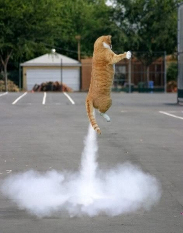

Rocket Cat: A History in Greatness
The Early Years
Born during the Golden Age of feline flight, Robert Falcon Morelli, or Bob as his friends called him, was called to flight at an early age.
Fearless as a kitten, he would astound his playmates and terrorize his mother by flying from the highest points he could manage.
While jumping from the top of the cabinets was great fun, Bob knew there were greater heights to scale in his life.
His parents prayed this would be a passing phase in Bob's life, but much like the Antarctic explorer he was named after, Bob knew he would not lead a life of quiet mousing desperation. He knew he was destined for bigger and better things.
After graduating at the top of his class in high school, Bob enlisted in the Feline Naval Academy. This is a super elite school for aspiring cat pilots and ship cats, mainly because water is gross and no one wants to go.
Bob persevered, however, and was soon on the highway to the danger zone!
Trouble!
While trying to woo a local girl he met on leave, Bob was nearly expelled from the Academy for taking dangerous risks to prove his cathood.
After doing too much catnip with his pals, Bob set out to prove to Callie he had the right stuff to be an astronaut.
Though he nearly died, this made him a legend amongst his fellow pilots. From that day forward, he went by the callsign "Rocket Cat."
As he lept from the precipice of the refrigerator, Bob envisoned climbing aboard the cockpit of a fighter jet and proving to the world Beagles are overrated aviators.

Redemption
Though Callie dumped him for being an idiot, Bob managed to stay enrolled at the Academy and compete in the prestigious Top Cat contest.
He easily won top honors and also his Captain's bars. Robert Falcon Morelli achieved his dream! He was now a naval fighter pilot! Take that, Beagle Brigade!
Where is Rocket Cat Now?
Bob has since retired from military service and now teaches at risk felines how to avoid being feral by learning to fly. You can reach Bob on his Contact Page and learn more about programs offered by his charity, "Give Cats the World."